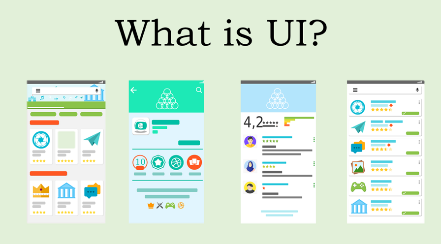

Путешествия
Горы и море
Идеи для путешествия на выходные.
В CSS большинство свойств можно анимировать.
Это означает, что их значения могут плавно изменяться во времени, а не переключаться мгновенно.
button {
background: #eaf4ff;
}button {
transition:
background 0.4s,
color 0.4s;
}Браузер автоматически вычисляет промежуточные значения между начальным и конечным состояниями.
Например, при перемещении элемента от 0px до 100px браузер создаёт промежуточные положения.
Оба механизма позволяют плавно изменять CSS-свойства, но используются для разных сценариев.
Плавный переход между двумя состояниями.
button {
transition: transform 0.3s;
}
button:hover {
transform: scale(1.1);
}Последовательность нескольких состояний.
@keyframes move {
from { left: 0; }
to { left: 200px; }
}
.box {
animation: move 2s infinite;
}CSS Transition позволяет сделать изменение свойств элемента плавным.
.box {
left: 20px;
width: 70px;
}
.box.active {
left: 220px;
width: 110px;
}.box {
left: 20px;
width: 70px;
transition:
left 0.7s,
width 0.7s;
}
.box.active {
left: 220px;
width: 110px;
}Transition всегда работает между двумя состояниями элемента: начальным и конечным.
.box {
opacity: 1;
transition: opacity 1s;
}
.box.hidden {
opacity: 0;
}Transition позволяет управлять несколькими параметрами перехода.
Что именно будет изменяться.
transition-property
Сколько времени занимает переход.
transition-duration
Когда должен начаться переход.
transition-delay
Как изменяется скорость движения.
transition-timing-function
button {
transition:
transform 0.5s ease 0.2s;
}Большинство свойств, имеющих числовые или цветовые значения, можно плавно изменять.
Некоторые значения, например auto, могут не иметь однозначного промежуточного значения. Поэтому такие свойства лучше не использовать для плавных переходов без дополнительной проверки.
Все параметры перехода можно записать с помощью сокращённого свойства transition.
transition: property duration timing-function delay;
.box {
transition: transform 0.5s ease;
}С помощью transition можно анимировать несколько свойств одновременно.
property
duration
timing-function
delay
.box {
transition:
width 0.7s ease,
height 0.7s ease,
background-color 0.7s ease,
transform 0.7s ease;
}
.box.active {
width: 150px;
height: 70px;
background: #e44d7a;
transform: rotate(180deg);
}Наведение курсора часто используется, чтобы подсказать пользователю, что элемент интерактивный.
.button {
background: #4285c5;
transition: background-color 0.3s ease;
}
.button:hover {
background-color: #e44d7a;
}.button {
transition:
background-color 0.3s ease,
box-shadow 0.3s ease;
}
.button:hover {
background-color: #e44d7a;
box-shadow: 0 6px 18px #4285c555;
}.menu a {
color: #555;
border-bottom: 2px solid transparent;
transition:
color 0.3s ease,
border-bottom-color 0.3s ease;
}
.menu a:hover {
color: #e44d7a;
border-bottom-color: #e44d7a;
}Тот же принцип работает с целыми карточками: плавно меняем несколько свойств.
Идеи для путешествия на выходные.

Простые решения для удобного UI.
Что происходит в мире веб-разработки.
При наведении можем одновременно изменить фон карточки и цвет заголовка.
.card {
transition:
background-color 0.3s ease,
border-color 0.3s ease;
}
.card h3 {
transition:
color 0.3s ease;
}
.card:hover {
background-color: #eaf4ff;
border-color: #4285c5;
}
.card:hover h3 {
color: #4285c5;
}
С помощью transition можно сделать
аккуратное выделение
карточки.
.card {
border: 2px solid transparent;
transition:
border-color 0.3s ease,
box-shadow 0.3s ease;
}
.card:hover {
border-color: #e44d7a;
box-shadow:
0 8px 25px #0002;
}При наведении на карточку можно изменить не только саму карточку, но и её содержимое.
.card {
transition:
box-shadow 0.3s ease;
}
.card button {
background: #ddd;
color: #555;
transition: background-color 0.3s ease,
color 0.3s ease;
}
.card:hover {
box-shadow: 0 8px 25px #0002;
}
.card:hover button {
background-color: #4285c5;
color: white;
}CSS Transform позволяет изменять внешний вид элемента без изменения его положения в структуре страницы.
Для работы с трансформациями чаще всего используются два свойства.
transform
Задаёт одно или несколько преобразований элемента.
transform:
translateX(50px); transform-origin
Определяет точку, относительно которой выполняется преобразование.
transform-origin:
left center;В одном свойстве можно объединить несколько преобразований.
transform: translateX(100px) rotate(30deg) scale(1.2);
translateX()
rotate()
scale()
Один и тот же набор операций в разном порядке даёт разный результат.
transform:
translateX(80px)
rotate(30deg);transform:
rotate(30deg)
translateX(80px);Трансформации изменяют только отображение элемента, но не его место в потоке документа.
Используем transform, чтобы меню плавно выезжало из-за края экрана.
Сначала обычная HTML-разметка. Пока без анимации.
<button class="menu-toggle">
<span></span>
<span></span>
<span></span>
</button>
<aside class="menu">
<strong>Меню</strong>
<nav>
<a href="#">Главная</a>
<a href="#">Каталог</a>
<a href="#">О компании</a>
<a href="#">Контакты</a>
</nav>
</aside>Используем position: fixed, чтобы меню было привязано к окну браузера.
.menu {
position: fixed;
top: 0;
right: 0;
width: 300px;
height: 100vh;
background: white;
}Меню должно занимать всю высоту окна и оставаться привязанным к его правому краю.
top: 0;
right: 0;Теперь используем transform.
.menu {
...
transform: translateX(100%);
}Процент рассчитывается относительно ширины самого меню.
width: 300px
translateX(100%)
Меню полностью уезжает за правый край.
Нам нужно вернуть меню в его исходное положение.
.menu.open {
transform: translateX(0);
} translateX(100%)
translateX(0)
Сейчас меню просто мгновенно перемещается. Добавим transition.
.menu {
transform: translateX(100%);
transition:
transform 0.35s ease;
} transform
transition
Осталось научиться добавлять класс open.
const toggle =
document.querySelector('.menu-toggle');
const menu =
document.querySelector('.menu');
toggle.addEventListener('click', () => {
menu.classList.add('open');
});.menu
.menu.open
Теперь можно посмотреть на три ключевые части вместе.
.menu {
position: fixed;
top: 0;
right: 0;
width: 300px;
height: 100vh;
background: white;
/* 1. Начальное положение */
transform: translateX(100%);
/* 2. Плавность */
transition:
transform 0.35s ease;
}
/* 3. Открытое состояние */
.menu.open {
transform: translateX(0);
} translateX(100%)
transition
translateX(0)
transform
transition
При наведении на текст появляются две линии. Попробуй навести курсор.
<div class="hover-underline">
Hover for underline
</div>Используем псевдоэлементы ::before и ::after как две линии.
.hover-underline {
position: relative;
display: inline-block;
}
.hover-underline::after,
.hover-underline::before {
content: '';
position: absolute;
width: 100%;
height: 2px;
background:
linear-gradient(to right, #ff0000, #00ffff
);
left: 0;
transform: scaleX(0);
transition:
transform 0.4s ease-out;
}::before
::after
.hover-underline::before {
top: -5px;
transform-origin: left;
}
.hover-underline::after {
bottom: -5px;
transform-origin: right;
}.hover-underline:hover::after,
.hover-underline:hover::before {
transform: scaleX(1);
}Наведи курсор на карточку — она перевернётся на другую сторону.
<div class="card">
<div class="card-inner">
<div class="card-front">
Front Side
</div>
<div class="card-back">
Back Side
</div>
</div>
</div>Для эффекта переворота нужны несколько свойств. Разберём их по очереди.
perspective: 1000px;
transition: transform 0.6s;
transform-style: preserve-3d;
rotateY(180deg)
.card {
perspective: 1000px;
}.card-inner {
transition: transform 0.6s;
transform-style: preserve-3d;
}.card:hover .card-inner {
transform: rotateY(180deg);
}При наведении иконка поворачивается, а цветной фон плавно поднимается снизу.
.icon {
transition: transform .5s;
}
a:hover .icon {
transform: rotateY(360deg);
}button::before {
top: 100%;
transition: .5s;
}
button:hover::before {
top: 0;
}При наведении изображение увеличивается и размывается, а информация о товаре плавно появляется.
CSS Animation позволяет создавать полноценные анимации без JavaScript.
@keyframes описывает, что должно происходить с элементом во время анимации.
@keyframes move {
from {
left: 0;
}
to {
left: 200px;
}
}Чтобы запустить анимацию, достаточно создать @keyframes и указать его имя в animation.
.box {
animation: move 2s;
}
@keyframes move {
from {
transform: translateX(0);
}
to {
transform: translateX(200px);
}
}Вместо from и to можно использовать проценты.
@keyframes bounce {
0% {
transform: translateY(0);
}
50% {
transform: translateY(-80px);
}
100% {
transform: translateY(0);
}
}@keyframes описывает саму анимацию, а animation определяет, как её воспроизводить.
animation: move 2s ease-in-out infinite;
move
2s
ease-in-out
infinite
Два параметра, которые нужны практически для любой анимации:
animation-name
Определяет, какую анимацию из @keyframes нужно запустить.
animation-name: move; animation-duration
Определяет, сколько времени занимает один цикл анимации.
animation-duration: 2s;.box {
animation-name: move;
animation-duration: 2s;
}Определяет, с какой скоростью будет происходить анимация.
linear
ease
ease-in
ease-out
ease-in-out
steps()
.box {
animation-timing-function: ease-in-out;
}Позволяет сделать паузу перед началом анимации.
animation-delay: 1s;
.box {
animation: move 2s;
animation-delay: 1s;
}Определяет, сколько раз должна повториться анимация.
1
3
infinite
.box {
animation-name: pulse;
animation-duration: 1s;
animation-iteration-count: infinite;
}Определяет, в каком направлении проигрывается анимация.
normal
animation-direction:
normal;reverse
animation-direction:
reverse;alternate
animation-direction:
alternate;.box {
animation: move 1s infinite alternate;
}Позволяет запускать и останавливать уже запущенную анимацию.
running
paused
.box {
animation: move 1.5s
ease-in-out infinite alternate;
}
.box:hover {
animation-play-state: paused;
}Все основные параметры анимации можно записать одной строкой.
animation: move 2s ease-in-out 1s infinite alternate;
move
2s
ease-in-out
1s
infinite
alternate
Внутри @keyframes описываем, как элемент должен выглядеть в разные моменты анимации.
@keyframes example {
0% {
/* начальное состояние */
}
50% {
/* промежуточное состояние */
}
100% {
/* конечное состояние */
}
}Для простой анимации достаточно указать начальное и конечное состояние.
@keyframes change {
from {
width: 65px;
background: #4285c5;
}
to {
width: 100px;
background: #e44d7a;
}
}Можно задать столько ключевых кадров, сколько нужно для сценария анимации.
@keyframes move {
0% {
transform: translateX(0);
background: #4285c5;
}
50% {
transform: translateX(120px);
background: #8b5cf6;
}
100% {
transform: translateX(0);
background: #e44d7a;
}
}Ключевой кадр может одновременно задавать несколько CSS-свойств.
@keyframes change {
0% {
width: 80px;
height: 80px;
background: #4285c5;
border-radius: 10px;
}
100% {
width: 160px;
height: 50px;
background: #e44d7a;
border-radius: 25px;
}
}Нажимаем кнопку — уведомление появляется с анимацией.
Пока уведомление не показано, оно находится за правым краем блока.
.notification-card {
transform: translateX(120%);
opacity: 0;
}Описываем, как уведомление должно появиться на экране.
from
70%
to
@keyframes notification-in {
from {
transform: translateX(120%);
opacity: 0;
}
70% {
transform: translateX(-10px);
opacity: 1;
}
to {
transform: translateX(0);
opacity: 1;
}
}.showСамо объявление @keyframes ещё ничего не анимирует. Нужно применить анимацию к элементу.
.notification-card.show {
animation:
notification-in
0.6s
ease-out
forwards;
}JavaScript отвечает за состояние элемента.
classList.add()
showButton.addEventListener('click', () => {
notification.classList.add('show');
});JavaScript каждую секунду изменяет число и после 5 секунд запускает исчезновение.
let seconds = 5;
timer = setInterval(() => {
seconds--;
secondsElement.textContent =
seconds;
if (seconds <= 0) {
hideNotification();
}
}, 1000);hideNotification()
С помощью @keyframes можно анимировать не только движение элементов, но и их визуальные эффекты.
Здесь мы не двигаем сам текст — мы изменяем его text-shadow.
text-shadow
animation
@keyframes
.shadow-dance-text {
color: #fff;
text-shadow:
5px 5px 0 #ff005e,
10px 10px 0 #00d4ff;
animation:
shadow-dance
2s infinite;
}
@keyframes shadow-dance {
0%, 100% {
text-shadow:
5px 5px 0 #ff005e,
10px 10px 0 #00d4ff;
}
50% {
text-shadow:
-5px -5px 0 #00d4ff,
-10px -10px 0 #ff005e;
}
}transform.
Если хочется найти идею для эффекта — можно посмотреть готовые примеры и разобрать, как они устроены.
Тени, glitch, neon, печатающийся текст, 3D-эффекты и другие примеры.
Красивые и необычные анимации: загрузчики, точки, линии, костёр и другие эффекты.
Создайте боковое меню, которое открывается по клику на иконку.
Спрячьте меню с помощью transform: translateX(100%), а при открытии верните его в translateX(0).
Затемнение можно сделать отдельным элементом. По клику на него удаляйте класс, который открывает меню.
Архив с файлами:
Архив загрузить через учебный портал.
Нажми ☰, чтобы открыть меню.
Это обычное содержимое сайта.